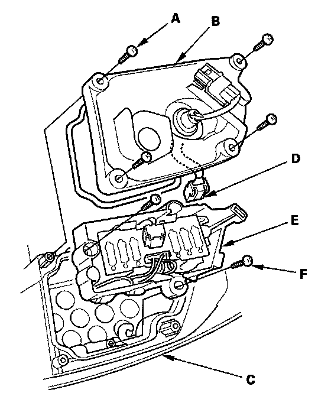

Brake Lamp: Service and Repair
Taillight/Brake Light LED Replacement1. Remove the taillight.

2. Remove the four screws (A) and the back cover (B) from the taillight (C).
3. Carefully disconnect the connector (D) from the taillight/brake light LED (E).
4. Remove the two screws (F) and the taillight/brake light LED from the taillight housing.
5. Inspect the gasket, if the gasket is distorted or compressed, replace it.
6. Install a new LED in the reverse order of removal.